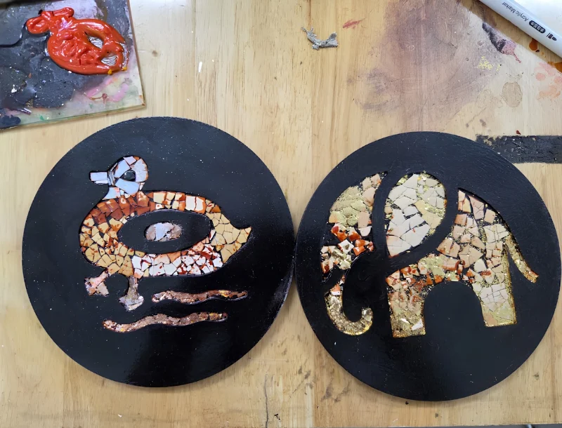

01
01Dạo một vòng,
gặp điều hay.
Phụ kiện sừng vẽ sơn mài, thú gỗ, tranh, đĩa, áo phông và khăn lụa Batik.
TẠI GIAN HÀNGLỄ HỘI THIẾT KẾ SÁNG TẠO HÀ NỘI 2026
Một điểm hẹn của thủ công Việt và những bàn tay thích sáng tạo. Ghé xem, thử làm, mang cảm hứng về nhà.
Khám phá trạm SOULINA

Nghệ thuật Việt, đồ thủ công và trải nghiệm tự làm. SOULINA mang những chất liệu văn hóa đến gần hơn qua từng cuộc gặp.
01Phụ kiện sừng vẽ sơn mài, thú gỗ, tranh, đĩa, áo phông và khăn lụa Batik.
TẠI GIAN HÀNG02Vẽ trang trí tò he đất, tự in bưu thiếp. Dành khoảng 15–20 phút để thử sức.
TẠI GIAN HÀNG · 15–20 PHÚT 03
03Dành thêm thời gian khám phá workshop vẽ sơn mài trong không gian SOULINA.
27 HÀNG BẠC · 1–2 GIỜ